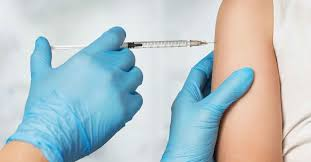
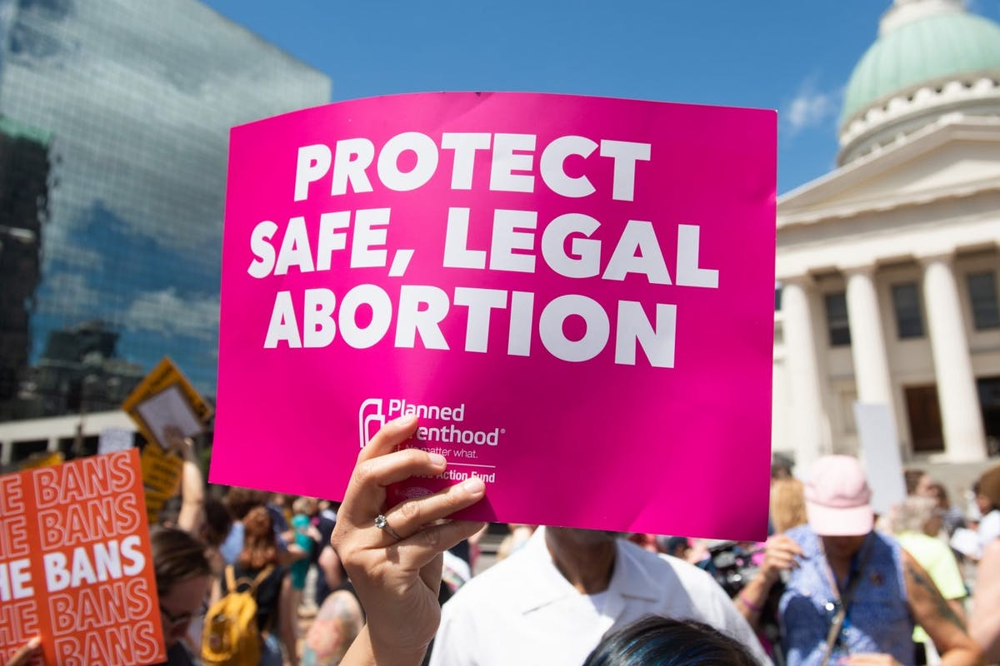
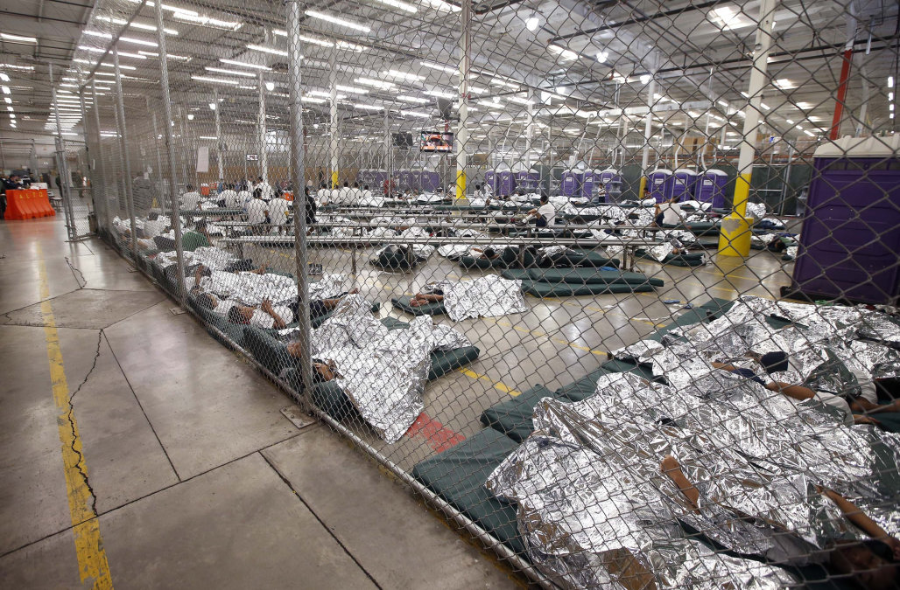
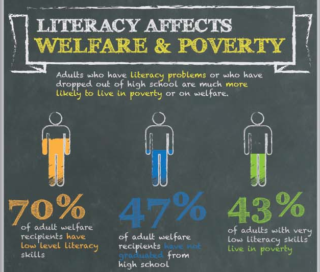
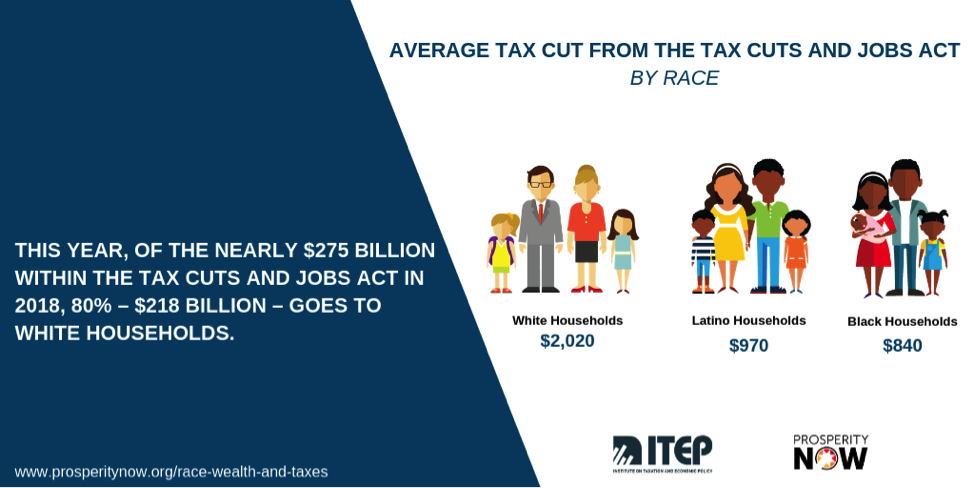
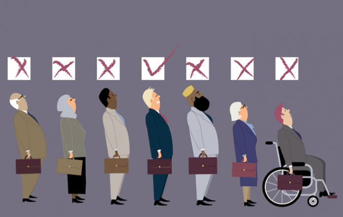

List of issues
In recent years, the issue of Climate Change has gained recognition as a growing issue, yet more must be done to prevent and reverse its consequences. The emission of fossil fuels causes carbon dioxide and other harmful gases to be trapped in the atmosphere, preventing sunlight and heat from escaping. This phenomenon is known as the Greenhouse Effect. Growing levels of carbon dioxide in the atmosphere due to the greenhouse effect will increase the planet’s temperatures drastically. If action is not taken, the planet will continue to deteriorate. The repercussions of climate change are exhibited through rising global and ocean temperatures, diminishing ice sheets, glaciers, and snow covers, rising sea levels, declining arctic sea ice, extreme weather changes, ocean acidification, and more. Over 70% of the world’s emissions are created by just 100 fossil fuel producers, from both manufacturing and the emissions given off when consumers use their products. However, this doesn’t mean that we can’t all play our small part in trying to help save our environment. To help reverse or simply slow the process of climate change, you can be more mindful of what kinds of products you consume and if they are environmentally conscious. Try and use less plastic and consider carpooling rather than simply driving yourself. Educate yourself about the negative impacts of climate change and action you as a teen can take. NASA has this site that shows the evidence of climate change and how it's measured.


Vaccines, a recent medical advancement and innovation, are currently the subject of scrutiny and criticism. The debate around vaccines revolves around the effectiveness of vaccines, the side effects of vaccines, and the amount of vaccines given to children. Many people fear vaccines due to misinformation. Some believe vaccines can lead to autism and others believe the side effects are too harsh. However, these popular myths about vaccines have been debunked by reputable scientists and government agencies. Although there are some vaccine side effects, these side effects usually far outweigh the negative health risks presented by the disease the vaccine is preventing. A recent influx of anti-vaccine propaganda has caused disease outbreaks, seen with the measles outbreak in several states. This is due to people pushing and sharing misinformation. However, you can help by sharing factual information about vaccines and urging the people you care about to get vaccinated.
Since the Supreme Court 1973 ruling in Roe v. Wade, controversy around changing abortion laws continues to be a hot discussion topic. The debate refers to the act of consciously terminating a pregnancy. Question centers around the ideas of abortion morality and if it should then be legal. The ‘pro-life’ side agues that the process is wrong while the ‘pro-choice’ side advocates for a woman’s right to choose whether to continue or terminate a pregnancy. The Silent ‘Victim’ refers to fetuses as they are unable to advocate for themselves. Non-religious disagreement continues over the question of whether unborn children are considered people who deserve rights, if they are separate beings from their mothers, and if the child’s life is more valuable than the mother’s. Often times, pregnancies are terminated because they pose a threat to the mental and or physical wellbeing of the mother, or if the pregnancy was caused by rape or incest. As of May 15 under The Alabama Human Life Protecion Act, a fetus is defined a a legal person, meaning abortion qualifies as homicide under the law. The only exceptions to abortion would be if the fetus had a “lethal anomaly” or to “prevent serious health risk” to the mother, with no exceptions made for the conditions in which the pregnancy was caused. In addidion to Alabama, states such as Louisiana, Ohio, Missouri, Mississippi, and Georgia have placed serious resrictions on abortion laws.
For decades, Congress has been unsuccessful in reaching an agreement in immigration reform after considering humanitarian, economic, and security concerns. Over half of the U.S population of undocumented immigrants have been living in the U.S for over 10 years, about a third of which are parents of American born children. Increasing amounts of Central American immigrants crossing the Mexican border do so seeking asylum, the act of which is legal, as you must be within the US to apply for asylum. Legally immigrating with a visa is often a lengthy and difficult process that not all seeking asylum can afford to wait for. In 2012, President Obama’s administriation implamented a program known as Defered Action for Childhood Arrival (DACA), providing work permits and allowing a renewable deportation deferal of two years for undocumented immigrants who arrive as children. He pushed for Congress to pass the DREAM Act and tried to implement Deferred Action for Parents of American (DAPA). Soon after President Trump advised federal agencies to build a physical wall between the U.S and Mexico. He also ended the “catch and release” policy, now detaining immigrants in camps. The issue of immigration continues to keep the nation divided. Currently, there is debate over if the separation and detaining of families is constitutional and moral. They live in overcrowded facilities where some have died and are not provided adequate legal representation. The backlog of asylum cases forces people to remain detained until their hearing. Around 11 million live in fear of deportation, roughly 3.6 million arrived as children. Many are currently trying to take legal action to prevent Trump’s immigration restriction.
Among the U.S’s plethora of domestic issues is its education system. Unfair district boundaries make public education worse for students living in poorer areas, and often impacts poor people of color the most. Public schools are often overcrowded as others are forced to close due to underfunding or under utilization. Students learn better in smaller classes where they can receive one on one help from teachers and instructors. According to the National Center for Education Statistics, 14 percent of schools exceed capacity. Teachers then are unable to adequately do their jobs. In addition, talented and gifted programs do not have enough diversity. Districts need to find a better system for recognizing talent in children before they are split and labeled. Many students learn differently and should be better included and represented in the school system. Many schools are unable to receive enough funding for innovative education programs, widening the achievement gap. Teachers also need to be trained in more modern approach to education instead of only being able to cater to select learning styles. Often times, students are also trapped in schools-to-prison pipeline. These children are often from urban areas and are not provided with alternative forms of success other than crime. Many often drop out, turning to crime and then become lost in the U.S overcrowded prison system. A college-gender gap presents itself in areas such as the STEM field which is male-dominated. In addition, diabled students need better access and assistance. Among many others, these problems have only agitated an already flawed education system in the U.S.
Healthcare is a pressing issue in the United States. Currently, the United States has a hybrid system. There is no single payer system, but rather a mix of citizens getting healthcare from their employers and the US government from systems such as Medicare, Medicaid, and the Veterans Administration. In 2014, nearly 32.9 million people did not have access to health care. This number was even higher before Obamacare, or the Affordable Care Act, passed. The ACA was a series of legislation that, essentially, tried to reduce the cost of healthcare. It did so with a three pronged approach. The first part of the ACA was ensuring that everyone could be insured by requiring insurance companies to cover people with pre-existing conditions. This meant that patients with illnesses such as ALS, MS, or cancer, could not be denied health insurance. However, many critics were worried that this would raise insurance costs for healthy citizens. Therefore, to combat this fear, the ACA required that all citizens must have health insurance for three quarters of the year or face a tax. To help people pay for insurance, the third part of the ACA was granting federal subsidies to those who could not afford health insurance.
Since the ACA’s implementation, the tax on citizens that do not have health insurance for three quarters of a year has been repealed by Congress. This resulted in the ACA not being as effective and in some cases raising insurance costs. While the ACA has granted health insurance to millions more people and those with pre-existing conditions, it has had its criticisms. Some project the ACA will cost the US over 1.7 trillion dollars. Furthermore, some people lost their company health insurance as their employers thought it was cheaper to pay the tax for not providing employees with health insurance rather than provide them with quality health care. Also, many saw their overall health care costs rise, as insurance companies were adjusting to the new insurance mandates. Overall, the ACA has its pros and cons. Both sides, however, agree that it can be improved. Many progessive politicians advocate for universal health care through a single payer system. Many conservative politicians advocate for repealing many of the ACA’s insurance mandates and instead give more flexibility to the states for handling health insurance costs. Either way, healthcare is a hotly debated topic, and one you should ask your elected officials' their stance on.
There is a large disparity between the classes, especially within the United States. According to this May 2019 Forbes report, The top 10% of this country has 70 percent of the wealth in this country. The top 50% has approximately 50 times the wealth of the remaining 50%. While the working people work hard, the rich profit off their work and get richer. This problem has recently gained more media attention with the debates around minimum wage, tax cuts, and economic policy stances of presidential candidates in the upcoming 2020 election. The concept of a minimum wage is that an employer can’t pay an employee below a certain amount in order to make sure they are being paid fairly. However, it is a widely-held fact that the current minimum wage is unfair, as lots of working-class individuals are working multiple minimum-wage jobs but still aren’t able to afford housing, healthcare/medication, and/or education. A lot of people believe that if the wealthy accumulate more wealth, their excess will “trickle down” and be redistributed to the rest, but it has been proven time and time again that this is simply conjecture. Many right-aligned politicians believe in tax cuts for the wealthy, believing that with more money, they will just choose to give it away out of a sense of ethics, but seeing as the wealth gap is increasing, this is an ineffective way of dealing with economic issues.
Discrimination of all types is rampant in the United States. The Human Rights Watch classifies racial discrimination as a serious human rights problem in the United States. People of color, especially black, indigenous, and latino people are often at serious risk of voter disenfranchisement and other infringements of their rights. This is seen with police brutality, prosecution on nonviolent drug charges designed to keep citizens in jail, and forms of surveillance such as the Patriot Act following 9/11. However, discrimination is not exclusive to race. Discrimination is also on the basis of sex, as women were (and in some places still are) barred from working, voting, owning land, and even having control of their own bodies. It is also seen with different religious beliefs, people with disabilities, and people in the LGBT+ community. Many people from these groups are often targeted unfairly and denied equal opportunities to jobs and housing. This is especially seen with gentrification and redlining. Redlining districts was a form of discrimination where real estate agents would not show houses in a certain neighborhood to people of color to ensure that it remained a white neighborhood. Gentrification is when primarily minority neighborhoods have their rent prices increased so the minorities are pushed out and forced to relocate. These gentrified neighborhoods’ rent prices are then increased even more and primarily rich and white people move in, changing the socio-economic makeup of these neighborhoods. Gentrification displaces families and forces them to lose their homes and businesses. Discrimination is a serious and important topic, and it is our moral pregovative to take action.
